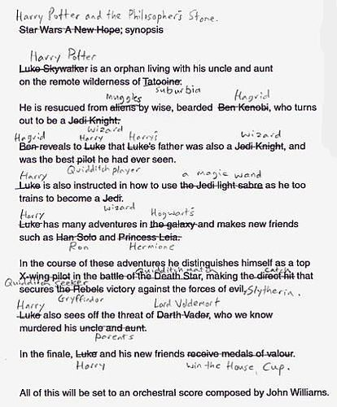

class: middle # Narrative Theory Concepts Matthew J. Lavin Clinical Assistant Professor of English and Director of Digital Media Lab University of Pittsburgh January 2017 --- class: middle # Overview - ### Story v Discourse - ### Constituent and supplementary events - ### Narrativity - ### Framing Narrative, Paratext - ### Masterplot - ### Closure --- class: middle # Story v Discourse <hr/> Police officers working with the DARE program has issued this warning: If you are driving after dark and see an on-coming car with no headlights on, DO NOT FLASH YOUR LIGHTS AT THEM! This is a common Bloods gang member "initiation game" that goes like this: <hr/> > The new gang member under initiation drives along with no headlights, and the first car to flash their headlights at him is now his "target". He is now required to turn around and chase that car, then shoot and kill every individual in the vehicle in order to complete his initiation requirements. <hr/> > Police Depts. across the nation are being warned that September 23rd and 24th is the "Blood" initiation weekend. Their intent is to have all the new bloods nationwide drive around on Friday and Saturday nights with their headlights off. In order to be accepted into the gang, they have to shoot and kill all individuals in the first auto that does a courtesy flash to warn them that their lights are off. Make sure you share this information with all your friends and family who are drivers. <hr/> --- class: middle # Constituent and supplementary events - <a href="http://www.poemhunter.com/poem/little-red-riding-hood-and-the-wolf/">Little Red Riding Hood And The Wolf</a>, by Roald Dahl - To tell the story of "Little Red Riding Hood", which details must be present? Which are optional? --- class: middle # Narrativity > When I came back from the East last autumn I felt that I wanted the world to be in uniform and at a sort of moral attention forever; I wanted no more riotous excursions with privileged glimpses into the human heart. Only Gatsby, the man who gives his name to this book, was exempt from my reaction — Gatsby, who represented everything for which I have an unaffected scorn. If personality is an unbroken series of successful gestures, then there was something gorgeous about him, some heightened sensitivity to the promises of life, as if he were related to one of those intricate machines that register earthquakes ten thousand miles away. This responsiveness had nothing to do with that flabby impressionability which is dignified under the name of the “creative temperament.”— it was an extraordinary gift for hope, a romantic readiness such as I have never found in any other person and which it is not likely I shall ever find again. No — Gatsby turned out all right at the end; it is what preyed on Gatsby, what foul dust floated in the wake of his dreams that temporarily closed out my interest in the abortive sorrows and short-winded elations of men. <em>The Great Gatsby</em> --- class: middle # Framing Narrative, Paratext - Framing Narrative: a literary device in which the main narrative is embedded in an outer narrative - Paratext: Text at the “threshold” of the text. Preface, table of contents, review --- class: middle # Masterplot  --- class: middle # Closure - Sometimes called resolution, although things can be unresolved and still feel over - Expectations must be both fulfilled and defied - Chekhov’s gun - What causes closure? Events, revelation, formal closure, symbolic closure